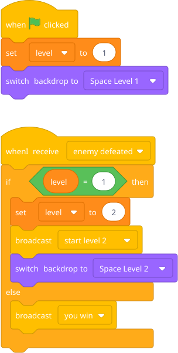
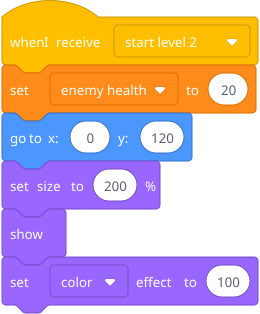
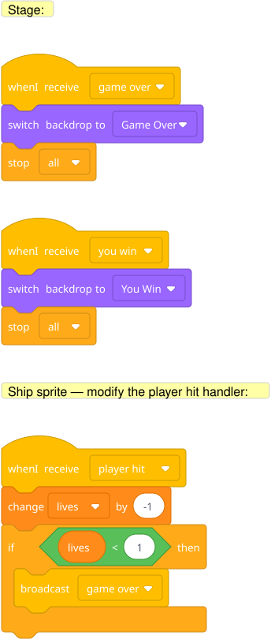

Add levels to the space shooter (or any prior game). When score hits a threshold → broadcast [next level] → backdrop changes, new enemies appear, difficulty increases.
Prep: Create two backdrops (e.g., "Space Level 1" with stars, "Space Level 2" with a nebula). Add a level variable.
Game manager script (put this on the Stage, not a sprite):

Enemy sprite — add:

Blocks to point out: The Stage can have scripts too — click on the stage in the sprite list to see its scripts area. Putting "game manager" logic on the stage keeps things organized. switch backdrop is under Looks (it shows up when you have the stage selected).
Add a "Game Over" screen and a "You Win" screen using broadcasts and backdrop switches.
Hint — blocks he'll need:

Create "Game Over" and "You Win" as backdrops — he can draw big text, explosions, confetti, whatever he wants. The broadcast → backdrop switch pattern is clean and reusable.